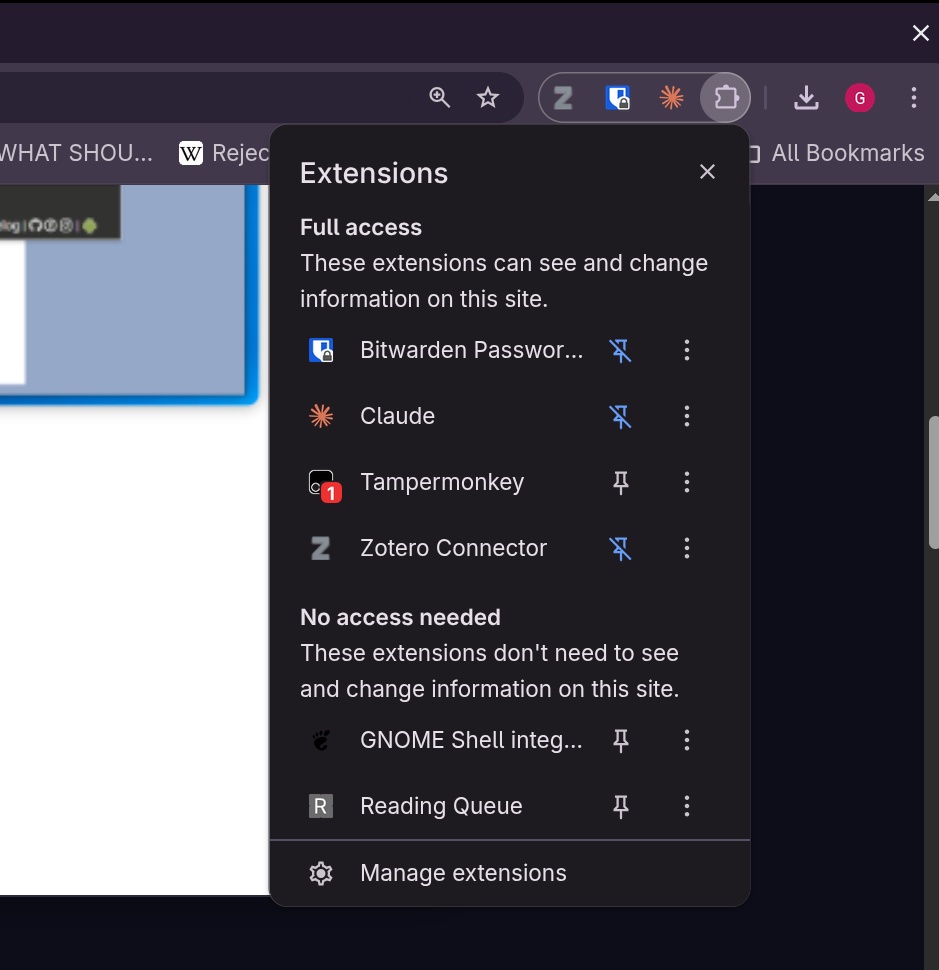
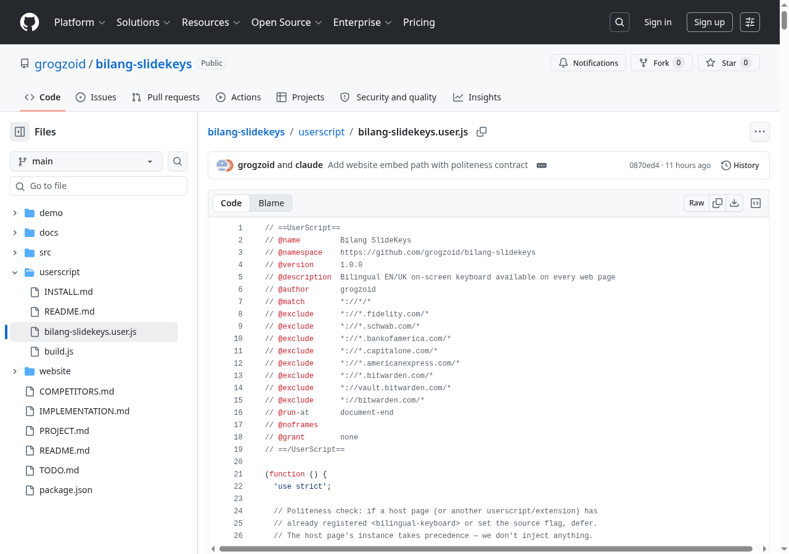
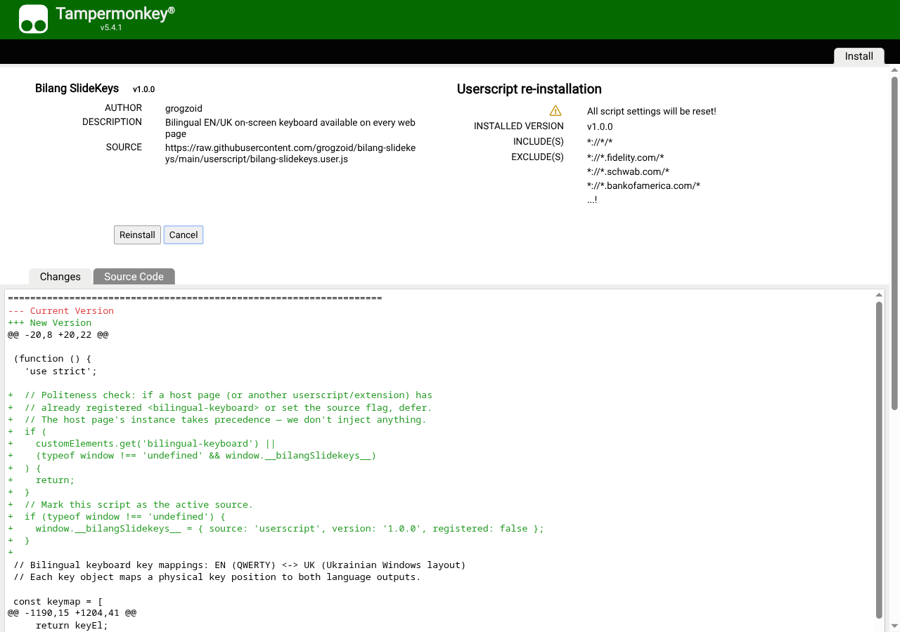
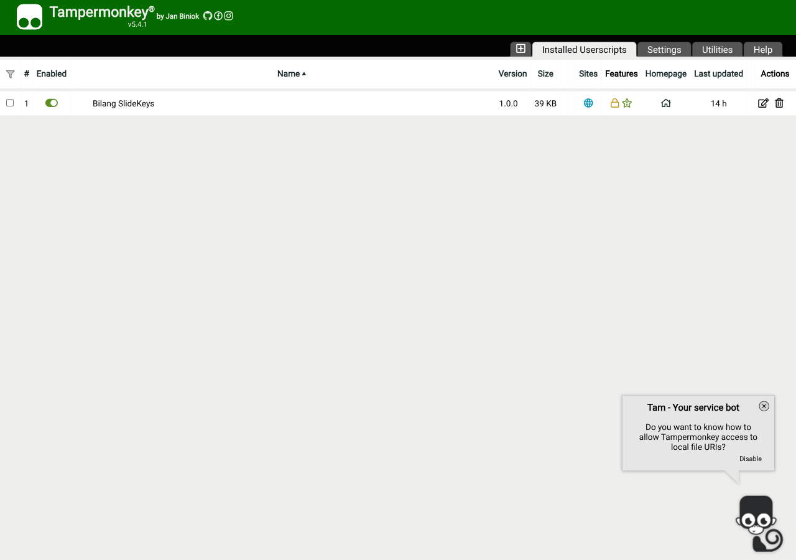
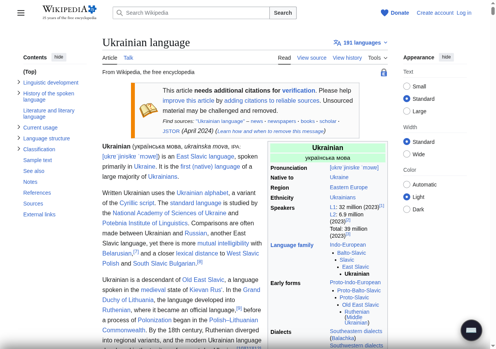
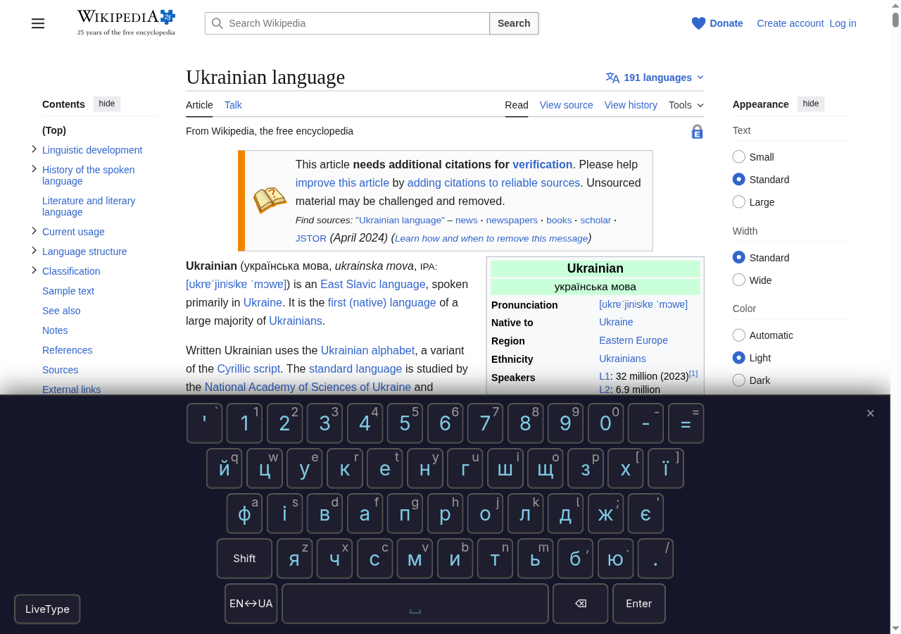
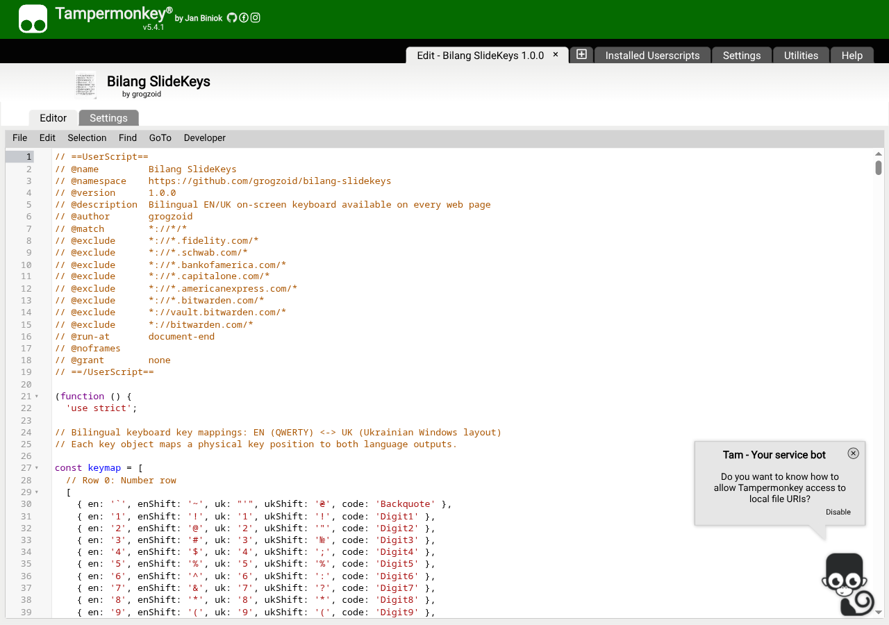

A step-by-step tutorial for installing the userscript in Chrome (or
any Chromium browser: Edge, Brave, Arc, Opera). About 5 minutes start to
finish.
Why a userscript? Until the Chrome Web Store
extension is published, the userscript is the easiest way to use
bilang-slidekeys on any website. The script stays out of your way until
you summon it — by the hotkey Ctrl+Shift+` (backtick)
or via the Tampermonkey extension menu — then a virtual keyboard slides
up so you can type Ukrainian.
Step 1 — Install Tampermonkey
Tampermonkey is a free browser extension that runs userscripts. It’s
the standard tool for this — over 10 million users.
After install, you’ll see a small Tampermonkey icon in your browser
toolbar (top-right area). If it’s hidden, click the puzzle piece icon
and pin Tampermonkey to keep it visible.

Chrome Extensions menu showing
Tampermonkey with pin option
Step 2 — Verify
Tampermonkey is enabled
Click the Tampermonkey icon. You should see “Dashboard,” “Utilities,”
and other options. If you see a warning about being disabled, follow
Tampermonkey’s prompts to enable it (Chrome sometimes asks for explicit
confirmation).
Two ways to install — pick whichever works for you.
Option A —
One-click install from GitHub (easiest)
Open the link above in your browser
Click the Raw button (top-right of the file
viewer on GitHub)

GitHub file view with Raw
button
The file should open as a .user.js URL. Tampermonkey
detects this and shows an install screen automatically:

Tampermonkey install
confirmation
Click Install
That’s it. The script is now active.
Option B
— Manual install via the Tampermonkey dashboard
If Option A doesn’t trigger the install screen (some browsers block
this):
Click the Tampermonkey icon → Dashboard

Tampermonkey dashboard
Click the + tab (Create a new script)
Delete the placeholder content in the editor
Open
https://raw.githubusercontent.com/grogzoid/bilang-slidekeys/main/userscript/bilang-slidekeys.user.js
in another tab
Copy the entire contents
Paste into the Tampermonkey editor
Press Ctrl+S (or Cmd+S on
macOS) to save
Tampermonkey editor with script
content
Close the editor tab. The script is now installed.
Step 4 — Turn the keyboard on
By default the script stays out of your way — no floating button, no
keyboard, nothing visible. You activate it on the pages where you want
to type Ukrainian. Two ways:
Hotkey (fastest)
Press Ctrl + Shift + ` (backtick — the key above
Tab, shares with ~) on any allowed page. The keyboard panel
slides up immediately and the floating ⌨️ button appears in the
bottom-right corner.

Floating keyboard button on
Wikipedia

Keyboard panel open on Wikipedia
article
Press the hotkey again to hide the panel. The floating button stays
around so you can summon it again with a click.
Tampermonkey menu
Click the Tampermonkey icon in your toolbar. Hover over (or click)
Bilang SlideKeys to see two new commands:
“Toggle keyboard here” — show/hide on this page
only. Resets when you reload.
“Always enable on [hostname]” — persistent. Click
once and the keyboard auto-loads on this site every time you visit.
Click again (“Stop always-enabling”) to remove the auto-load.
Use “Always enable” for sites you type Ukrainian on regularly
(e.g. your email, language-learning site, friend’s chat). Use “Toggle
here” or the hotkey for one-off use.
Try typing
With the keyboard panel open:
Click any text input, textarea, or rich-text editor on the page
Click letters on the virtual keyboard — Ukrainian characters appear
in the input
If nothing happens: - The Tampermonkey dashboard should show “Bilang
SlideKeys” as enabled (green toggle) - The site
shouldn’t be in the script’s exclude list (banks and password managers —
see “Customizing what sites” below) - The page should be fully loaded -
For some sites with very strict CSP, the keyboard may fail to inject —
try a different site to confirm
Step 5 — Customize the hotkey
The default is Ctrl + Shift + `. To change it:
Tampermonkey icon → Dashboard
Click Bilang SlideKeys (opens the script
editor)
Find this line near the top of the launcher:
const HOTKEY ='Ctrl+Shift+Backquote';
Change it (examples: 'Alt+Shift+KeyK',
'Ctrl+Alt+Slash', or '' to disable the hotkey
entirely)
Ctrl+S to save
Refresh any open page for the change to take effect
The Tampermonkey menu commands (“Toggle keyboard here” and “Always
enable on [hostname]”) work regardless of the hotkey setting — they’re
independent paths.
Step 6 — Try LiveType mode
LiveType lets you type on your physical keyboard and produce
Ukrainian text in real time, using the standard Ukrainian
keyboard layout (ЙЦУКЕН).
Click in any text input
Open the keyboard panel
Click the LiveType button (bottom-left of the
panel)
Type on your physical keyboard — each key produces the Ukrainian
letter that the standard Ukrainian layout assigns to that QWERTY
position
Example: to type привіт (hello), press
the physical keys ghbdsn. That’s because ЙЦУКЕН maps:
Ukrainian
Physical QWERTY key
п
g
р
h
и
b
в
d
і
s
т
n
This is the same mapping a Ukrainian native uses when their OS
keyboard layout is set to Ukrainian. LiveType lets you practice that
muscle memory in the browser without changing your system keyboard.
The button glows blue when LiveType is active. Click it again to turn
off.
What this is
not: phonetic transliteration
LiveType uses positional mapping (the QWERTY
position holds a Ukrainian letter), not phonetic
mapping (Latin letters that sound like Ukrainian).
If you’d rather type pryvit and get привіт
— i.e. type Latin letters that sound like the Ukrainian word —
that’s phonetic transliteration. bilang-slidekeys does not do this.
Tools that do:
Keyman — phonetic Ukrainian keymans available
cross-platform
Phonetic typing is faster for English speakers who haven’t memorized
ЙЦУКЕН. The trade-off: the layout you’re using doesn’t match what real
Ukrainian keyboards have, so muscle memory doesn’t transfer if you ever
switch to a phone or a Ukrainian-default machine. LiveType is
intentionally for users who want to learn the real layout.
What changes when LiveType is
on
LiveType OFF
LiveType ON
Click virtual keys
Inserts the active language’s character
Same
Type on physical keyboard
Latin character (browser default)
Ukrainian character (or active language)
Press Enter, Backspace, arrows
Browser handles normally
Same — modifiers and special keys pass through
Press Ctrl+A / Ctrl+C / Ctrl+V
Browser shortcut works
Same — modifier combos are not intercepted
Caps Lock + letter
Browser handles
Produces uppercase Ukrainian
Shift + letter
Browser handles
Produces uppercase or shifted Ukrainian
Type into a regular form input
Latin characters
Ukrainian characters
Type into a contenteditable (Slack, Gmail, WhatsApp)
Latin characters
Ukrainian characters
The intuition: your physical keys behave as if you were on a
Ukrainian-layout keyboard, but only while LiveType is on. Toggle off and
your keyboard returns to normal English (or whatever your OS layout is)
immediately.
Activate from JavaScript
If you want to control the keyboard programmatically — e.g. from a
bookmarklet, browser console, or your own script — the keyboard is a
custom DOM element you can query and manipulate:
// Open the keyboard paneldocument.querySelector('bilingual-keyboard').setAttribute('visible','');// Close itdocument.querySelector('bilingual-keyboard').removeAttribute('visible');// Toggleconst kb =document.querySelector('bilingual-keyboard');if (kb.hasAttribute('visible')) kb.removeAttribute('visible');else kb.setAttribute('visible','');// Switch active languagekb.setAttribute('active-lang','en');// or 'uk'// Enable LiveType from codekb.setAttribute('input-mode','live-type');// Listen for eventskb.addEventListener('key-input', (e) => {console.log('typed:', e.detail.char,'in', e.detail.lang);});
Useful as a bookmarklet: paste the toggle snippet into a JavaScript
bookmarklet to summon the keyboard from the bookmarks bar without using
the hotkey.
Try it here
The HTML version of this tutorial includes a working demo form below.
Click into any field and click the floating ⌨️ button (or use
Ctrl+Shift+`). The script must be installed and enabled on this page for
it to work.
Demo form
Practice typing into different input types:
Click here, then type…
Customizing what
sites the script runs on
When you summon the keyboard (via hotkey or “Always enable on
[hostname]”), the script will inject on every web page
except these blocked domains:
chase.com (banking)
To exclude additional sensitive sites of your own (banks, brokerages,
password managers), edit the @exclude lines in the script’s
metadata block — see “Customizing what sites the script runs on”
below.
To add your own exclusions:
Tampermonkey dashboard → Bilang SlideKeys
Find the // ==UserScript== block at the top
Add a new line: // @exclude *://*.example.com/*
Ctrl+S to save

Tampermonkey editor showing @exclude lines
Customizing the floating
button
Drag it anywhere on the page (click and hold, then
move). Position is saved across page loads.
Dismiss it by hovering and clicking the small ×
that appears in the top-right corner of the button. It disappears for
the rest of the session. Open the keyboard with the hotkey to bring it
back.
Updating to new versions
When new versions are released, Tampermonkey can auto-check:
Tampermonkey dashboard → Bilang SlideKeys
File menu (top-left) → Reload from
URL
Or set Tampermonkey to auto-update userscripts (Settings → check
“Auto-update”).
Troubleshooting
The keyboard isn’t visible on a page and the hotkey does
nothing - The script is opt-in: nothing renders until you
summon it. Press Ctrl+Shift+` to show, or use the
Tampermonkey menu → “Toggle keyboard here”. - Confirm the script is
enabled in Tampermonkey dashboard (green toggle next to “Bilang
SlideKeys”). - Confirm the site isn’t excluded (banks, password managers
— see “Customizing what sites” section).
The keyboard appears but typing doesn’t insert characters
into a text field - Click the text field first to focus it,
then type. The keyboard binds to the last-clicked input. - For rich-text
editors (Slack, Gmail compose, WhatsApp Web): make sure you’ve clicked
inside the message area before typing.
The hotkey conflicts with another site shortcut -
Change the hotkey in the script editor as described in Step 5.
The Tampermonkey install screen doesn’t appear when I click
“Raw” - Some browsers block userscript installs via the URL.
Use Option B (manual paste).
Two keyboards appear on a page - This means a
website has its own embedded copy AND the userscript is also injecting.
The userscript should defer, but if it doesn’t, refresh the page. Report
the site so we can investigate.
Banking site has the keyboard injected by mistake -
Add an @exclude line for that site’s domain (Step 6
above).
Privacy
This script: - Does NOT collect any data - Does NOT make any network
requests - Does NOT contact any external servers - Stores ONLY the
floating button’s position in your browser’s localStorage (for
persistence across reloads)
The full source is open on GitHub — anyone can audit it.